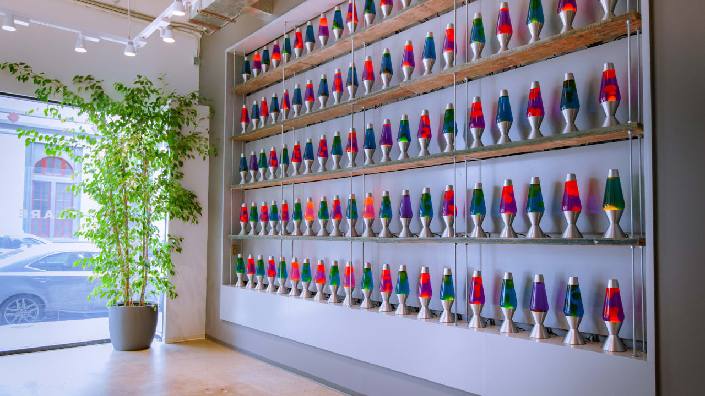

Title
3/20/2022
by Josh Temel

Introduction
This page continues with part two of our discussion of Project Thor, where we will discuss in more detail how the Project Thor team has capitalized on randomness mixing and natural phenomena in order to help diversify operating system's entropy pools. This article does not require the reader to have an immense technical background in computing or cybersecurity, but it does assume that the reader has already read our article The Problem With Randomness in Computing & Cryptography. If you have not yet read that article, it is strongly suggested that you first go back and give it a read before continuing.
Project thor simply put
While the probability is obviously very low that somebody would manage to predict, gain access to, or modify the sources of true randomness used to create entropy pools, it would be irresponsible of us as computer scientists to pretend that it is impossible. Therefore, it's important that we hedge against possible attacks by continuing the add extra layers of defense against attackers.
That's where Project Thor comes in.
In short, Project Thor simply provides an additional truly random source that can be mixed with other sources to build more diverse and secure entropy pools as explained in our Problem With Randomness in Computing & Cryptography article. Furthermore, we're not the first ones to do this. LavaRand is another system created by CloudFlare that is design to add entropy to their production machines. Their system takes advantage of the unpredictable flow of lava in a lava lamp to generate entropy. This system (pictured below) can be viewed in the lobby of their San Francisco office and is the actual system they use for their production fleet.
What makes Project Thor different is that rather than using the lava in lava lamps for our source of entropy, we have chosen to use data that has been gathered by measuring lightning strikes. We believe this to be a better source of entropy because it isn't drawn from a custom system, but rather from an already established lightning database called the Global Lightning Detection Network (GLD360). This will help to make Project Thor more scalable and more applicable to other cryptography application such as encryption decryption services while keeping costs low for any potential developers. Additionally, Project Thor draws our randomness from both inherent properties of lightning and from the unpredictability of measurements as we will discuss in further detail later in this article.
design

The overall design for the flow of data through Project Thor is pictured above. Each stage that the data passes through can be broken down into the following steps:
Finish adding steps here
Text Here
Text Here